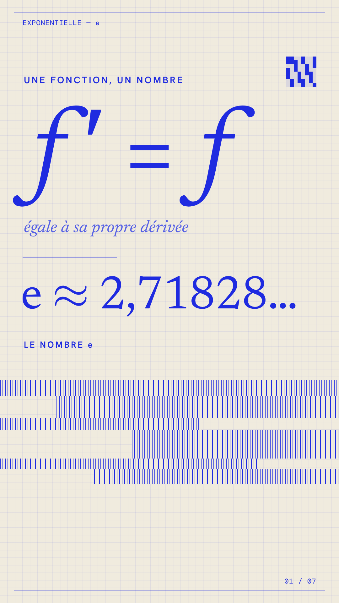
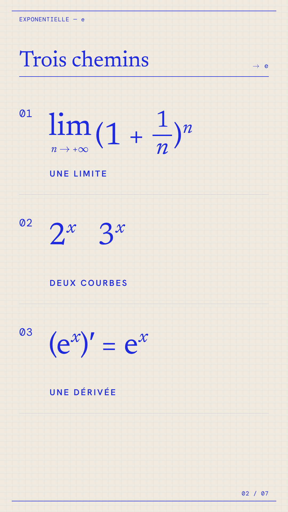
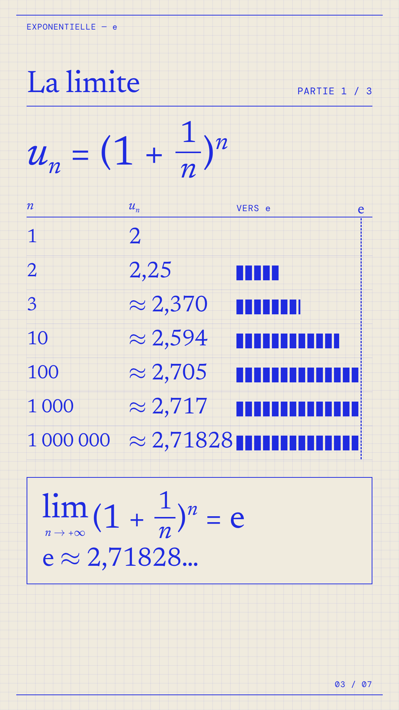
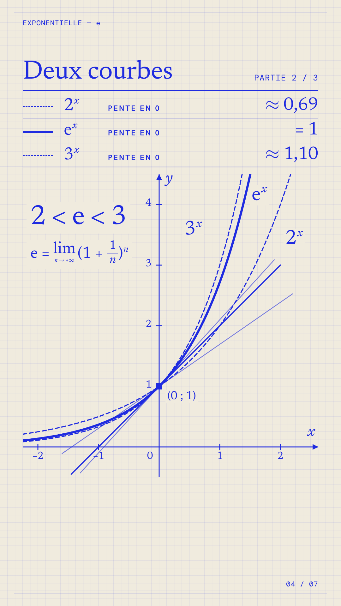
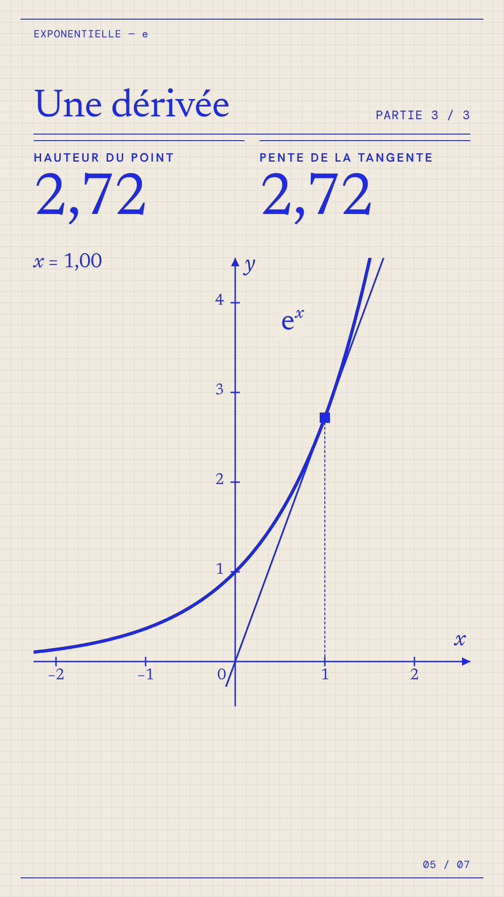
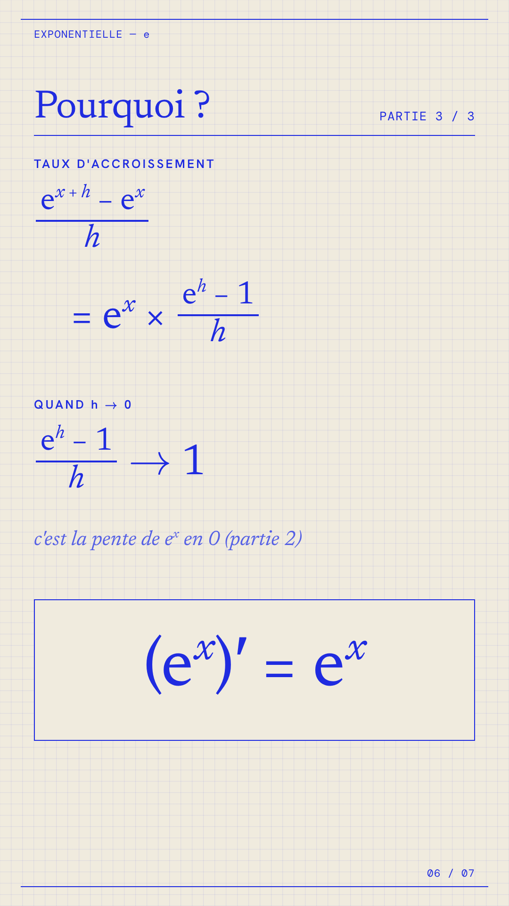
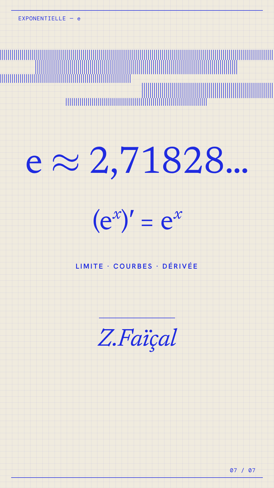

01: Le secret
0.0 to 6.8s
« f ′ = f » apparaît en grand, puis « e ≈ 2,71828… » s'écrit chiffre par chiffre.

02: Trois chemins
6.8 to 12.9s
Les trois lignes du plan arrivent sur « une limite », « deux courbes », « une dérivée ».

03: La limite
12.9 to 35.9s
Une ligne du tableau par valeur de n dite par la voix ; les barres approchent la ligne e ; puis l'encadré de la limite.

04: Entre 2 et 3
35.9 to 57.6s
2ˣ et 3ˣ se tracent, puis leurs tangentes en (0 ; 1) avec leurs pentes ; eˣ se trace entre les deux avec la pente 1 ; « 2 < e < 3 ».

05: La tangente glisse
57.6 to 67.3s
Le point glisse de x = −1,5 à x = 1 ; les deux compteurs « hauteur » et « pente » restent égaux.

06: Pourquoi
67.3 to 83.2s
Le calcul s'écrit ligne par ligne au rythme de la voix, puis (eˣ)′ = eˣ s'encadre.

07: Un seul nombre
83.2 to 90.0s
e ≈ 2,71828… et (eˣ)′ = eˣ, puis la signature « Z.Faïçal ».